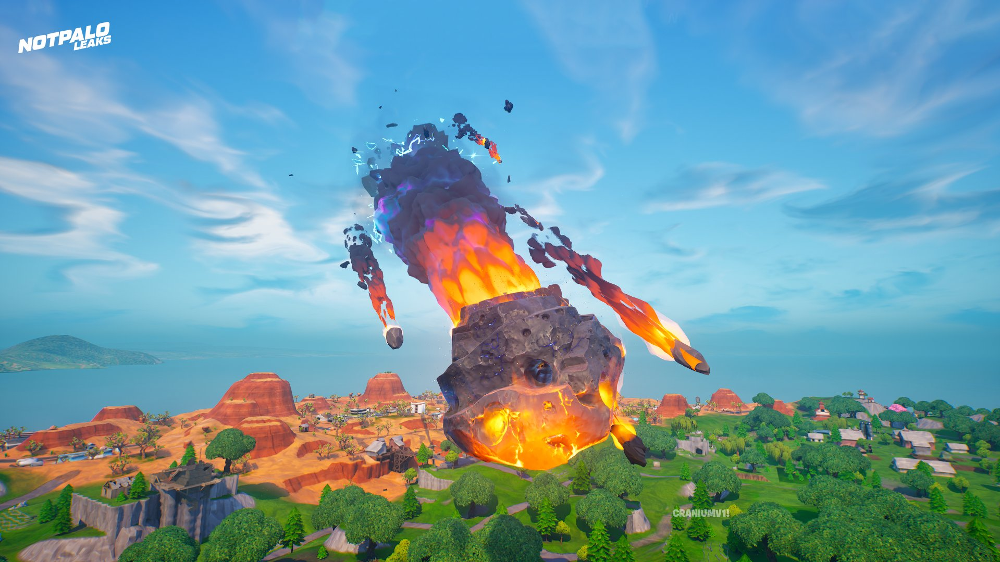

Temp. 3-4
Un gran meteorit blau apareix al cel. A mesura que s'acosta, la gent de l'Illa comença a preocupar-se per on
aterrarà. Ciutadans de Tilted Towers dibuixen cartells que prediuen un desastre.
El meteorit es trenca en diversos trossos fins al seu gran accident a Dusty Depot, ara Dusty Divot, i les
seves altres peces aterren a un altre lloc, incloses les Tilted Towers.

Poc després del seu aterratge, es construeix un laboratori d'anàlisi per amagar el meteor dels ulls del públic, construït per aquells que miren l'illa des de sota, a l'ombra. La seva presència a l'illa va ser insinuada per quatre búnquers tancats col·locats a les seves quatre cantonades des del principi.
Petits fragments del meteor s'infonen amb antigravetat i es converteixen en Hop Rocks.